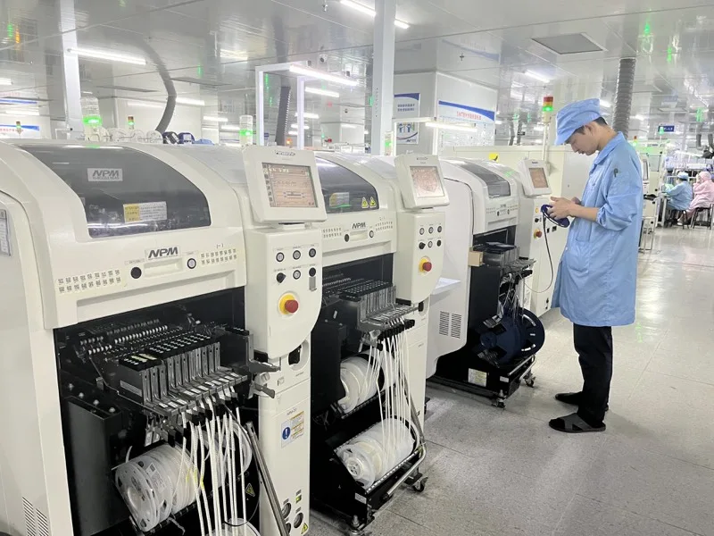

Indoor LED video wall in a corporate hospitality space (Asia Vision image library).
IEC 62368-1 Safety Certification for LED Video Walls: What Buyers Should Verify
2026-11-12Asia VisionCompliance
Does an LED video wall need IEC 62368-1? In most export markets, yes. IEC 62368-1 is the international product-safety standard for audio/video, information and communication technology equipment, and it is the standard most LED display cabinets are now evaluated against. It appears in tenders directly, or through its regional versions: EN IEC 62368-1 in Europe, UL 62368-1 and CSA C22.2 No. 62368-1 in North America, and other national adoptions. A tender line that says “IEC 62368-1 compliant” is easy to write and easy to answer with a document that does not actually cover your screen. This guide explains what the standard covers on a video wall and how to check the paperwork before you sign.
It complements our existing compliance guides. The CB report guide explains the CB Scheme itself, the UL vs ETL checklist covers North American listing marks, and the CE guide covers the EU declaration. Here the focus is the safety standard and the evidence behind it.
What IEC 62368-1 Actually Covers
IEC 62368-1 replaced the older split between IEC 60065 (audio/video) and IEC 60950-1 (IT equipment). In the EU the older harmonised standards were withdrawn at the end of 2020, so new declarations reference EN IEC 62368-1. The standard uses a hazard-based approach: it classifies the energy sources inside the product and then requires safeguards between each source and a person.
Energy source
Classes
Where it shows up on an LED wall
Electrical (ES)
ES1, ES2, ES3
AC input, power supply primary side, low-voltage DC to modules
Power source for fire (PS)
PS1, PS2, PS3
Power supply, receiving card, module boards, wiring inside the cabinet
Accessible surface temperatures of the face and the cabinet
Radiation (RS)
RS1, RS2, RS3
Optical radiation from the LED face
For each source the report records which safeguards are used — basic, supplementary, reinforced, or instructional — and the tests that prove them. That is why the report, not the certificate summary, is the useful document: it tells you what was tested and in what configuration.
What it does not cover matters as much. IEC 62368-1 is a product standard. The building wiring, the circuit protection upstream of the wall, the structural mounting and the fire classification of interior finishes are governed by local electrical codes, building codes and fire rules. EMC emissions are a separate test regime (for example CE EMC or FCC Part 15). A clean 62368-1 report is necessary for an indoor wall, but it is not the whole compliance file.
CB Report, CE and UL 62368-1: How They Fit
Three documents tend to arrive together, and buyers often treat them as interchangeable:
IECEE CB test certificate and CB test report. Issued by a CB test laboratory against IEC 62368-1, usually with national differences for the target countries. Other labs in the scheme can accept it as the basis for national approvals.
EU declaration of conformity. The manufacturer's declaration under the Low Voltage Directive, citing EN IEC 62368-1 among other standards. The 62368-1 report is the evidence behind the safety part of it.
NRTL listing in North America. A UL, ETL or other NRTL listing to UL 62368-1 / CSA C22.2 No. 62368-1, with factory follow-up inspections. A CB report can speed this up but does not replace it.
The common mistake is accepting one of these as proof of the others. A CB certificate with no US national differences does not give you a North American listing; a CE declaration with no test report behind it is only a declaration.
A Step-by-Step Check of the Report
Confirm the standard and edition. IEC 62368-1 has several editions. The report should name the edition, and your tender or national authority may require a specific one.
Match the model list. The report lists the models and variants covered. Check the exact series, pitch and cabinet size you are buying. A report for an indoor 500 × 500 mm cabinet does not automatically cover an outdoor or a 16:9 cabinet from the same factory.
Check the manufacturer and factory. The applicant, manufacturer and factory addresses should match the company you are contracting with, or the relationship should be explained.
Read the critical components list. The power supply, internal wiring, connectors, PCB laminates, fans and any plastic parts in the fire-enclosure path are listed with their own ratings. If the production unit uses a different power supply, the report may no longer apply.
Look for national differences. The CB report lists which national deviations were assessed. If your country is not among them, ask how they will be covered.
Check the electrical rating and configuration. Input voltage range, frequency and rated current should match your site supply and the way cabinets will be daisy-chained.
Verify the certificate. CB certificates can be checked in the IECEE online database; North American listings can be checked in the certifier's public directory. Our guide on verifying a UL certificate shows the same logic.
The Video-Wall Details That Trip Reports
LED walls differ from a single monitor in ways that affect the safety evaluation. Raise these with the supplier before the purchase order, not after delivery:
Daisy-chained AC. Many cabinets pass mains through to the next cabinet. The report should cover the maximum number of cabinets per chain and the connector rating; the installer then sizes the circuit protection.
Redundant power. On walls with dual power supplies, both supplies and the switching arrangement should be in the evaluated configuration. Asia Vision's RH-PRO COB series, for example, publishes dual power, dual receiving cards and a dual signal path, so the redundant build is the one to ask documentation for.
Accessible surface temperature. A face that people can touch in a lobby or a showroom is evaluated differently from one mounted out of reach.
Front-service access. Opening a module from the front exposes the cabinet interior. The instructions and safeguards for service staff are part of the evaluation.
Outdoor use. The standard has specific requirements for equipment intended for outdoor installation. An indoor report does not cover an outdoor wall.
Rental and touring. Rental cabinets are rigged, dropped into flight cases and reconnected hundreds of times. Ask whether the evaluated configuration includes the rental power and signal connectors and the rigging hardware.
Figure 1 shows an SMT production line. A safety report is only meaningful if production keeps building the evaluated configuration, which is why component changes need to be controlled.

Figure 1. SMT production line for LED modules (Asia Vision image library).
Writing It Into the Tender
A tender line that will survive evaluation is specific about the evidence, not just the standard. A workable wording:
Suggested tender wording: “The offered LED display cabinets shall be evaluated to IEC 62368-1 (state edition) by an accredited laboratory. The bidder shall submit the test report and certificate covering the exact model, pixel pitch and cabinet size offered, including the national differences for [country], and the critical components list. Changes to listed critical components after award require written notice and updated evidence.”
Add the regional mark you actually need — CE declaration, UKCA, an NRTL listing, or a national scheme — as separate lines. Our Europe import certification guide lists the other documents usually requested alongside it.
How to Request It From Asia Vision
Ask for the safety documentation per series and configuration, at quotation stage. For an indoor meeting room or control wall, that might be the M-PRO (published 16:9 die-cast aluminium cabinet, P1.25/P1.56/P1.87, common cathode) or the RH-PRO COB redundant build. For a mixed retail or airport estate, the X Series publishes COB, SMD and GOB modules in one cabinet family with a DC 5V module supply and front service, so state which module type and cabinet size you need covered. Certificates, report numbers and covered models are not listed on our product pages; we confirm them per model on the quotation, and if a configuration is not covered by an existing report we will say so before you order.
Product pages publish a 3-year warranty and 18-day standard delivery. Allow extra time in the programme if a new evaluation or a national approval is needed. Send the model list and target countries through the contact form and we will reply with the available documentation.
FAQ
Q: What is IEC 62368-1?
A: It is the international safety standard for audio/video, information and communication technology equipment. It replaced IEC 60065 and IEC 60950-1 and uses a hazard-based approach that classifies energy sources and the safeguards protecting people from them.
Q: Is a CB certificate the same as a UL listing?
A: No. A CB test certificate and report to IEC 62368-1 can support national approvals, but a North American listing to UL 62368-1 / CSA C22.2 No. 62368-1 is issued by an NRTL with factory follow-up inspections.
Q: What should I check in an IEC 62368-1 report for an LED wall?
A: The standard edition, the exact models and cabinet sizes covered, the manufacturer and factory, the critical components list including the power supply, the national differences assessed, and the electrical rating.
Q: Does IEC 62368-1 cover the installation of the video wall?
A: No. It is a product standard. Building wiring, circuit protection, structural mounting and fire classification of finishes are governed by local codes and the authority having jurisdiction.
Sources
IEC 62368-1, Audio/video, information and communication technology equipment – Part 1: Safety requirements (IEC).
IECEE CB Scheme online certificate database.
Asia Vision product pages: RH-PRO COB, M-PRO, X Series (specifications as published in November 2026).
Verify edition, national differences and acceptance with your test laboratory and the authority having jurisdiction.
Preparing a tender or an import file? Send the models, pitches and destination countries, and we will reply with the safety documentation available for each configuration. Start a project enquiry.